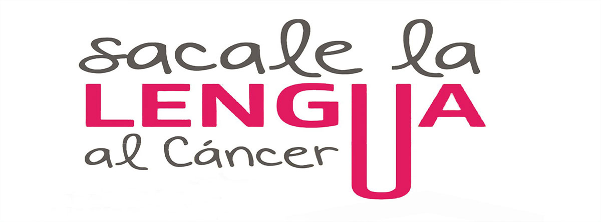

Se denomina cáncer oral o de boca al cáncer que se desarrolla en
cualquiera de las partes que componen la boca (cavidad bucal).
El cáncer de boca es uno de los tantos tipos de cáncer que corresponden a la categoría llamada «cánceres de cabeza y cuello».
Este cáncer puede afectar las siguientes partes:
Parte interna de las mejillas
¿Cuándo debo consultar al odontólogo?
Pide una consulta con tu odontólogo si tienes signos y síntomas que te preocupen y que duren más de dos semanas. Es posible que tu médico investigue
tus signos y síntomas y los resultados sean causados por una infección.
Factores de riesgo
Los factores que pueden aumentar el riesgo de cáncer de boca incluyen los siguientes:
El consumo de cualquier tipo de tabaco, incluidos cigarrillos, cigarros, pipas, tabaco de mascar y rapé, entre otros.
El consumo excesivo de bebidas alcohólicas.
La exposición excesiva al sol en los labios.
Un virus de transmisión sexual llamado virus del papiloma humano (VPH).
Un sistema inmune débil.
Prevención
No hay ninguna manera comprobada de prevenir el cáncer de boca. Sin embargo, puedes seguir
estos consejos para reducir el riesgo de cáncer de boca:
Deja de consumir tabaco o no comenzar a hacerlo. Si consumes tabaco, deja de hacerlo. Si no
usas tabaco, no empieces. Consumir tabaco, ya sea que lo fumes o lo mastiques, expone a las células de la boca a peligrosas sustancias químicas que producen cáncer.
Si bebes alcohol, que sea con moderación. El consumo excesivo y frecuente de alcohol puede moderación.
Evita la exposición excesiva al sol en los labios. Mantente a la sombra siempre que sea posible
bien todo el rostro, incluida la boca. Incorpora el uso de un protector solar para los labios como
parte de la rutina del día a día.
Consultar a tu odontólogo regularmente. Como parte del examen dental de rutina, pídele a tu
odontólogo que te examine toda la boca para detectar cualquiera cosa extraña que pueda llevar a cáncer en la boca.
Signos y síntomas más comunes
Entre los signos y síntomas del cáncer de boca se pueden incluir los siguientes:
Una llaga en los labios o la boca que sangra fácilmente y no cicatriza durante más de 2 semanas.
Sangrado bucal.
pérdida de dientes o cambio en la �posición de los dientes.
Dificultad o dolor para llevar prótesis.
Dientes flojos.
Aparición de lesiones blancas o rojizas dentro de la boca.
Un crecimiento o abultamiento dentro de la boca.
Dolor o entumecimiento en cualquier parte de tu boca.
Dolor de oído.
Dificultad o dolor al tragar.
Un cambio en la voz, como ronquera crónica.
Bultos en el cuello.
Parte interna de las mejillas
Otros signos del cáncer oral
¿Cuándo debo consultar al odontólogo
Pide una consulta con tu odontólogo si tienes signos y síntomas que te preocupen y que duren más de dos semanas.
Es posible que tu médico investigue tus signos y síntomas y los resultados sean causados por una infección.
Factores de riesgo
Los factores que pueden aumentar el riesgo �de cáncer de boca incluyen los siguientes:
El consumo de cualquier tipo de tabaco, incluidos cigarrillos, cigarros, pipas, tabaco de mascar y rapé, entre otros.
El consumo excesivo de bebidas alcohólicas.
La exposición excesiva al sol en los labios.
Un virus de transmisión sexual llamado virus� del papiloma humano (VPH).
Un sistema inmune débil.
Prevención del cáncer oral
No hay ninguna manera comprobada de prevenir el cáncer de boca. Sin embargo, puedes seguir estos consejos
para reducir el riesgo de cáncer de boca:
Deja de consumir tabaco o no comenzar a hacerlo. Si consumes tabaco, deja de hacerlo.
Si no usas tabaco, no empieces. Consumir tabaco, ya sea que lo fumes o lo mastiques, expone a las células
de la boca a peligrosas sustancias químicas que producen cáncer.
Si bebes alcohol, que sea con moderación. El consumo excesivo y frecuente de alcohol puede irritar
las células de la boca y hacerlas vulnerables al cáncer. Si bebes alcohol, hazlo con moderación.
Evita la exposición excesiva al sol en los labios. Mantente a la sombra siempre que sea posible
para proteger la piel de los labios contra el sol. Usa un sombrero con ala ancha que te proteja
bien todo el rostro, incluida la boca. Incorpora el uso de un protector solar para los labios como
parte de la rutina del día a día.
Consultar a tu odontólogo regularmente. Como parte del examen dental de rutina, pídele a tu
odontólogo que te examine toda la boca para detectar cualquiera cosa extraña que pueda llevar a
cáncer en la boca.